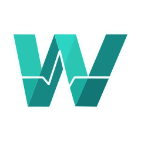

Competitive Online Scrabble Live on YouTube
LIVE MATCHESNEXT-LEVEL COMMENTARYPROCTORED DUELS
Welcome to WPulse Gaming, your front-row seat to online Scrabble action!
Here, you'll get to watch players go head-to-head in real time, with live tile draws, fast-paced gameplay, player reactions, commentary, and broadcast features you really won't find anywhere else.
Oh, you've never played Scrabble? No worries. And to those who don't understand why anyone would get excited over words in a dictionary? We'll get you there.
Just sit back, enjoy the action, and get ready to find that Scrabble is a lot more exciting than you thought!
Next duel & schedule
We're going live for the very first time! Come be part of it!
Times are in West Africa Time (WAT, UTC+1). Each match announcement confirms the full settings.

Commentary for this duel
The WPulse Telestrator
Don't just hear the analysis. See it! The WPulse Telestrator lets commentators bring their ideas directly onto the live board, illustrating moves and strategies with clear, interactive visuals.

-
Arrows and highlights
Draw attention to threats, key squares and tactical opportunities with arrows and highlights right on the board.
-
Words on the board
Type in a word and watch it appear letter by letter, showing viewers exactly how a potential play would look.
-
Engine moves, one tap away
Found an interesting move in the engine analysis? Send it straight to the board with a single tap.
About the stream
WPulse Gaming brings Scrabble players from all over the world together for organised online matches on Woogles.io. Each duel follows its announced format and match rules, with the games broadcast live for viewers.
How a match works
The board
Played on Woogles.io using CSW24 lexicon
The clock
5–10 minutes per player, with overtime continuing below zero.
The call
Players can challenge plays according to the match settings.
The finish
Best of 7, 11 or 15. First to 4, 6 or 8 wins takes the match.
Where to watch
- Subscribe
- Turn on the bell for notifications
- Add the duel to your calendarUse the buttons in Next duel
These are general descriptions. The specific match announcement is the source of truth.
What the stream looks like
Here's a look at what appears on screen during a WPulse Duel.


Live board
The board updates with every play, highlighting the latest move.
Player tiles
Live tracking of tile shuffles and each player's uncommitted tiles on board during their turn.
Scores and clocks
Follow each player's score and remaining time, including overtime.
Move history
Follow every play as the game unfolds, including challenges, exchanges and other key moves.
Engine analysis and evaluation bar
See the engine's win-percentage estimate and recommended moves.
Live commentary
Commentators use arrows and highlights to explain positions and key plays.
Game result banner
Game results appear on screen as soon as a game ends.


New to Scrabble?
- CSW24
- Collins Scrabble Words 2024, the official word list used for these duels.
- 10-point challenge
- If a challenged word is valid, the player who played it gets a 10-point bonus. If it's not valid, the word comes off the board.
- Evaluation bar
- A live estimate of the on-turn player's chance of winning, calculated by the MAGPIE engine without knowing the opponent's tiles.
Because both racks are visible on the stream, players must not watch or listen to it during a game. See Fair play and the proctor.
Want to play in a duel? See how to apply.
Excel Muyiwa
Main commentatorFull stream
The founder of WPulse Gaming, Excel Muyiwa is an experienced Nigerian Scrabble commentator, leading the production and coverage of this duel.
Kareem Jamiu
Co-commentatorFirst half
They call him Babaláwo, and not without reason. Kareem Jamiu is a young Nigerian Masters player, known for conjuring magic on the Scrabble board. Now, he's bringing that experience and analytical eye to the commentary booth.
Victor Lawrence
Co-commentatorSecond half
When he's not creating art or taking the stage, Victor Lawrence is teaching Scrabble and putting his memory to the test. A creative artist, thespian and Scrabble tutor, he sure brings plenty of personality to keep an audience engaged.